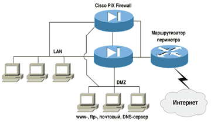
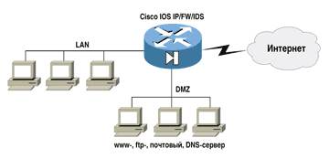
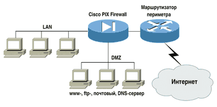
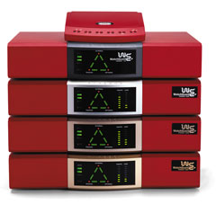
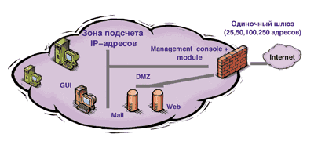
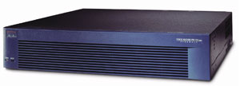

Александр Евангели
aevg@pcweek.ru
В конце ноября 2001 г. 26 стран Европы, США, Канада, Мексика и Япония подписали первую Международную конвенцию по борьбе с компьютерными преступлениями. Нашей страны там нет.
Присоединение России к конвенции требует парламентской ратификации, а также принятия законов, позволяющих эффективно бороться с киберпреступностью и отслеживать незаконные платежи и переводы денег. Трудно представить себе думское лобби, заинтересованное в продвижении таких законов в России. Поэтому словосочетание Russian hacker еще долго будет наводить ужас на Западе и оставаться предметом гордости для соотечественников.
Тенденции нападения и рынок
Защищенность систем меняется со временем, средства сетевой безопасности непрерывно совершенствуются, но то же самое происходит и с методами взлома. Поэтому работу по обеспечению безопасности невозможно довести до конца. Возрастающая мощь инструментов обеспечения безопасности отражает, с одной стороны, интенсивное развитие коммуникационных инфраструктур, а с другой - является ответом на изощренные средства нападения.
Интернет стал зоной активного роста преступности. По данным Интерпола, в прошлом году официально зарегистрированный ущерб в США составил 32 млрд. долл. С кредиток похищено 400 млн. долл. В России прирост преступности в сфере высоких технологий составил 720%. Однако больше беспокойства доставляют не грабители, а вредители: число вирусных атак через электронную почту постоянно растет и достигло почти 90% от общего числа заражений.
Последние два года рынок услуг и продуктов по обеспечению безопасности стабильно развивался, о чем свидетельствует, например, отчет Gartner Dataquest за прошлый год. В целом рынок ПО безопасности вырос в 2000 г. на 25%, до 3,3 млрд. долл. (для сравнения: в 1999 г. прирост составил 22%). Даже спад в американской экономике, начавшийся в середине 2000 г., слабо повлиял на рынок безопасности. Быстрее всего этот сектор рос в Азии - на 45%, однако этот рынок не слишком велик: доля Европы и США составляет 82% рынка программных средств общей безопасности (прирост 17% и 36% соответственно). Сегменты, например, средств обнаружения вторжения и инфраструктуры открытых ключей (PKI) росли очень быстро. Что касается лидеров, Symantec после слияния с Axent в декабре 2000 г. переместилась с четвертой позиции на первую, оттеснив прежнего лидера Computer Associates.
Рынок средств безопасности резко пошел вверх после 11 сентября. Газеты постоянно пишут о безопасности, а менеджеры и CIO эти газеты читают. Решения, включающие идентификацию пользователей с помощью сканеров отпечатков пальцев или радужной оболочки, казавшиеся вначале экзотикой, начали хорошо продаваться.
Опрос Института компьютерной безопасности (CSI) и ФБР (2001 CSI/FBI Computer Crime and Security Survey) показал, что средства обнаружения атак стали использоваться существенно чаще, чем в предыдущем году, - 61% против 50%. То же самое происходит и с межсетевыми экранами - 95% в 2001 г. против 78% в 2000 г. Аналогичный опрос, проведенный в России московским отделением Ernst&Young в 2001 г., дал сопоставимые цифры - 38 и 76%.
Ключевой элемент защиты
Наш разговор о безопасности будет ограничен одним типом средств защиты - межсетевыми экранами, или брандмауэрами.
Межсетевой экран защищает от самых разнообразных атак, в том числе от фальсификации IP-пакетов, перехвата сеансов, зондов, потоков SYN, реализующих атаку типа "отказ от обслуживания" (Denial of Service, DoS). Он также обеспечивает функции посредника для таких протоколов и сервисов, как HTTP, DNS, ftp и NetMeeting, и многих других.
Результаты аналитических исследований рынка безопасности различаются у разных исследовательских компаний, и у каждого производителя средств защиты имеется собственная картина мира. На этом динамичном рынке регулярно вспыхивают новые звезды с новыми средствами и технологиями защиты.
Мы исходили из отчета Infonetics Research (http://www.infonetics.com), посвященного рынку межсетевых экранов. Указанные в нем рыночные доли совпадают с впечатлениями от маркетинговой и рекламной активности компаний - производителей средств защиты. Однако отсутствие нескольких заметных игроков этого рынка (например, Internet Security Systems, ISS) относится к области вопросов, а не ответов. Возможно, это связано с тем, что ее продукты отнесены к другому классу устройств, что в ряде случаев вызывает сомнение. На волне этого сомнения, а также учитывая множество тенденций, воздействующих на рынок средств защиты и его изменчивость в последнее время, дадим качественную оценку.
В целом на этом рынке выделяются компании Cisco System, Check Point, Symantec. Рынок брандмауэров объединяет несколько сегментов, в частности, VPN. Притом, что технология виртуальных частных сетей могла бы быть хорошей основой для концентрации усилий и кристаллизации рынка VPN, этот рынок весьма пестр - компаний здесь почти столько же, сколько и продуктов.
Разные исследовательские компании в своем взгляде на VPN выделяют и разных лидеров - Cisco System и Check Point (в обоих случаях с долей, превосходящей 60%). Как ни странно, все правы. Долю Cisco дают ее собственные продукты - она обеспечена общеотраслевым лидерством Cisco. Долю Check Point обеспечивает ее открытая технология, которая работает в продуктах самых разных фирм.
Рынком гигабитных межсетевых экранов почти безраздельно владеют Netscreen и Cisco Systems. Незначительные доли имеют компании CyberGuard, PGP Security и Sonic Wall. Этот сегмент технологически наиболее перспективен, и от него можно ждать неожиданностей - например, появления компании, способной потеснить лидеров.
Кроме общих тенденций рынка средств безопасности на скоростные решения может повлиять рост смешанного трафика, чувствительного к задержкам. После 11 сентября стало ясно, что надо меньше путешествовать, а конференции вести в дистанционном режиме. Появились признаки роста соответствующего рынка, что может повлечь за собой вторичный рост спроса на скоростные экраны, поскольку брандмауэры - это всегда "бутылочные горлышки" для трафика.
Гигабитные решения
Гигабитные межсетевые экраны устанавливаются на каналах передачи данных с очень высокой пропускной способностью в крупных компаниях: например, в центрах обработки данных, у Интернет-провайдеров или на ведущих предприятиях различных отраслей промышленности.
Как правило, все они реализуются на заказных микросхемах. Для них специально пишутся операционные системы, поскольку стандартная ОС не годится для этих задач - ни UNIX, ни тем более Windows не относятся к системам реального времени.
Как уже говорилось, на этом рынке два безусловных лидера - Netscreen и Cisco Systems.
Cisco Systems
Межсетевой экран Cisco Secure Private Internet Exchange (PIX) Firewall 535 имеет шесть либо десять портов Gigabit или 10/100 Мбит/с Ethernet и плату VPN Accelerator Card. Межсетевой экран может одновременно обслуживать 500 тыс. соединений. VPN поддерживает пропускную способность 100 Мбит/с при шифровании Triple-DES и 2 тыс. туннелей.
Высокая производительность PIX Firewall основана на ОС реального времени и специальной схеме защиты, реализующей алгоритм адаптивной безопасности (adaptive security algorithm, ASA), который эффективно скрывает адреса пользователей от взломщиков. Алгоритм ASA обеспечивает безопасность на уровне соединения на основе контроля информации об адресах отправителя и получателя, последовательности нумерации пакетов TCP, номерах портов и добавочных флагах TCP. Эта информация сохраняется в таблице, на соответствие с записями в которой проходят проверку все входящие пакеты. Доступ через PIX разрешен только в том случае, если соединение успешно прошло идентификацию. Для внутренних и авторизованных внешних пользователей экран прозрачен, но и для них можно ограничить права доступа.
Благодаря применению технологии Cut-Through Proxy (сквозного посредника) Cisco PIX Firewall обеспечивает преимущество в производительности по сравнению с экранами-посредниками на базе UNIX. Как и обычные proxy-серверы, PIX контролирует установление соединения на прикладном уровне. После того как пользователь успешно прошел авторизацию доступа в соответствии с принятыми правилами безопасности, PIX обеспечивает контроль потока данных между абонентами на уровне сессии. Такая технология позволяет межсетевому экрану работать значительно быстрее, чем обычные proxy-экраны.
ОС реального времени Cisco PIX - собственная разработка компании, предназначенная специально для задач обеспечения безопасности.
Для повышения надежности межсетевой экран PIX Firewall может устанавливаться в сдвоенной конфигурации. Второе устройство можно сконфигурировать для работы в режиме горячего резервирования (рис. 1). Переход на резервный аппарат выполняется незаметно для пользователей. PIX 535 также имеет дополнительные источники питания с горячей заменой.
|  | Рис. 1. Два устройства Cisco PIX Firewall, работающие в режиме горячего резервирования.
|
NetScreen Technologies
Гигабитный брандмауэр NetScreen-1000 использует алгоритмы параллельной обработки и специализированные интегральные схемы GigaScreen. NetScreen построен по модульному принципу. Процессорный модуль выполняет операции классификации пакетов, управления сеансами и контроля за соблюдением политики безопасности. Коммутирующий модуль распределяет трафик между несколькими процессорными модулями. Он имеет один доверительный и один недоверительный порт Gigabit Ethernet и коммутирующую структуру с пропускной способностью 6 Гбит/с. Вспомогательный модуль имеет один порт управления по внешнему каналу, консольный порт и интерфейс высокой готовности, с помощью которого две системы NetScreen-1000 могут быть объединены в конфигурацию "главный - ведомый".
NetScreen-1000 выпускается с четырьмя (модель 1000ES) или шестью процессорными модулями (модель 1000SP). NetScreen-1000ES поддерживает одновременно 300 тыс. сеансов, 15 тыс. туннелей VPN и пять Virtual System; NetScreen-1000SP - 500 тыс. сеансов, 25 тыс. туннелей VPN и 100 Virtual System.
PGP Security/Network Associates
Гигабитный межсетевой экран PGP 1000 компании PGP Security (подразделение Network Associates) построен на четырех процессорах UltraSPARC-II 440 МГц. Он имеет два порта Gigabit Ethernet и четыре 10/100 Мбит/с Ethernet. PGP 1000 работает под управлением 32-разрядной ОС Sun Solaris 8. Брандмауэр поставляется с графическим Web-ориентированным средством администрирования, позволяющим администраторам избавиться от рутинных операций с командной строкой.
PGP 1000 может работать в режиме контроля с сохранением состояния, в режиме посредника на прикладном уровне или в режиме Adaptive Proxy; администратор может также комбинировать все три режима. Кроме того, PGP 1000 включает в себя антивирусный продукт McAfee и поддерживает Cluster Enterprise компании Legato для обеспечения работы в режиме высокой готовности.
Экраны для предприятий
В эту категорию продуктов входят аппаратные и программные реализации межсетевых экранов (рис. 2). Аппаратные решения популярны не только на рынке малых и средних предприятий, удобство их использования и управления ими высоко ценится и крупными компаниями.
|  |
| Рис. 2. В качестве межсетевого экрана в небольшом офисе может использоваться маршрутизатор. В случае устройства Cisco на нем устанавливается расширенная версия ПО Cisco IOS с функциями межсетевого экрана (Stateful Firewall) и системы обнаружения вторжений (IDS).
|
Что касается программных решений, то некоторые из них работают под управлением Windows или UNIX. Другие включают в себя ОС с ПО межсетевого экрана; эти решения, как правило, основаны на операционной системе с удаленными из нее не нужными для экрана функциями.
Рынок межсетевых экранов очень широк. Производители систем защиты могут предложить решение для любого масштаба сети в ценовом диапазоне от 2 до 60 тыс. долл. (впрочем, существуют и свободно распространяемые продукты, требующие затрат только на установку и настройку). Десятки производителей ведут конкурентную борьбу за средства, выделяемые компаниями на организацию защиты. И для каждого сектора рынка - от маленьких офисов до крупнейших провайдеров услуг - предлагается множество различных продуктов.
Производителям удалось значительно упростить использование межсетевых экранов и управление ими. Графические интерфейсы, инсталляционные программы-помощники и предварительно сконфигурированные устройства - все это способствовало приходу экранов на массовый рынок. Жесткая конкуренция привела к серьезному снижению цен.
Проще становится установка экранов и управление ими, расширяется функциональность. Все экраны поддерживают VPN, обеспечивают преобразование сетевых адресов (Network Address Translation, NAT), фильтрацию пакетов по содержанию и высокую готовность. Средства антивирусной защиты и выявление внешних атак становятся непременными атрибутами брандмауэров.
Продукты для небольших предприятий представляют собой выделенные серверы (рис. 3) с предустановленным и сконфигурированным на них ПО межсетевого экрана, VPN и ОС UNIX, Linux или BSD.
|  | Рис. 3. Решение с выделенным межсетевым экраном.
|
WatchGuard Technologies
Компания WatchGuard предлагает широкий спектр моделей, отвечающий потребностям всех сегментов рынка (рис. 4).
|  | Рис. 4. Все модели компании WatchGuard Technologies.
|
Модели Firebox 4500 и 2500 представляют собой аппаратные межсетевые экраны под управлением ОС Linux с защищенным ядром. Пропускная способность брандмауэров составляет 197 Мбит/с в режиме пакетной фильтрации и 60 Мбит/с - в режиме посредника (прозрачный proxy) на прикладном уровне. Обе модели позволяют обслуживать запросы до 5 тыс. пользователей одновременно, причем размер защищаемой сети неограничен. Каждый межсетевой экран имеет три сетевых интерфейса 10/100 Мбит/с Ethernet.
Оба межсетевых экрана могут поддерживать до 1000 туннелей VPN, но модель FireBox 4500 позволяет достичь более высоких по сравнению с FireBox 2500 скоростей шифрования информации по алгоритму TripleDES - 100 и 70 Мбит/с соответственно.
Еще один продукт компании WatchGuard для корпоративного рынка - межсетевой экран Firebox 1000 предлагает сетевую защиту и производительность VPN на скоростях, отвечающих требованиям предприятий среднего уровня. В тестах по фильтрации 1400-байтных полнодуплексных UDP-пакетов в IPSec-туннеле Firebox 1000 показал скорость 55 Mбит/с. Межсетевой экран способен обрабатывать запросы до 1000 пользователей одновременно. Его пропускная способность составляет 185 Мбит/с в режиме пакетной фильтрации и 43 Мбит/с - в режиме посредника на прикладном уровне.
Для небольших и средних предприятий и удаленных офисов компания выпускает продукты Firebox SOHO и Firebox 700.
Firebox 700 способен обслуживать одновременно до 250 пользователей. Это межсетевой экран, поддерживающий как пакетную фильтрацию, так и фильтры - посредники приложений. Специалисты WatchGuard оценивают производительность Firebox 700 в 131 Мбит/с в режиме пакетной фильтрации и 43 Мбит/с - в режиме посредника. Firebox 700 позволяет создавать виртуальную частную сеть со 150 туннелями одновременно и выполнять шифрование TripleDES со скоростью 5 Мбит/с.
Firebox SOHO работает под управлением коммерческой ОС VxWorks, обеспечивая защиту 50 пользователей, и поддерживает функционирование пакетных фильтров с пропускной способностью 9 Мбит/с. Он также поддерживает виртуальную частную сеть с пятью туннелями и пропускной способностью 1,3 Мбит/с (модификация SOHO/tc) при использовании шифрования TripleDES.
Symantec
Symantec в результате приобретения Axent Technologies получила VelociRaptor - аппаратный межсетевой экран с функциями посредника на прикладном уровне. Он поставляется с ПО межсетевого экрана Raptor 6.5 компании Axent и защищенным ядром Linux на сервере Cobalt RaQ.
VelociRaptor поддерживает NAT и производительность 90 Мбит/с при четырех соединениях Ethernet на 10/100 Мбит/с. В минимальной конфигурации обеспечивается защита до 25 уникальных IP-адресов. Устройство можно масштабировать для защиты неограниченного числа IP-адресов.
С весны 2001 г. компания Symantec стала выпускать межсетевой экран Raptor под названием Symantec Enterprise Firewall. Этот программный продукт работает под управлением Windows NT/2000, Solaris 2.6 или 2.7, Tru64 UNIX, HP-UX. Он обеспечивает контекстную проверку приложений.
В продукт включен модуль PowerVPN компании Axent, обеспечивающий шифрование по алгоритмам DES и TripleDES. Пропускная способность VPN - 10 Мбит/с. Устройством можно управлять удаленно через Microsoft Management Console.
Symantec Enterprise Firewall с гибридной архитектурой можно использовать для удлинения периметра корпоративной сети за счет подключения филиалов и дистанционных пользователей, что достигается в результате интеграции с продуктом Symantec Enterprise VPN (ранее известным как PowerVPN) и персональным межсетевым экраном.
Продукт поддерживает широкий спектр способов проверки подлинности, в том числе Radius, цифровые сертификаты, LDAP, проверку подлинности пользователей домена Windows NT.
Благодаря гибридной архитектуре администратор может работать с разнообразными службами. Например, он вправе разрешить передачу трафика HTTP в режиме контекстной проверки, а для ftp задействовать все функции посредника. В межсетевом экране имеются функции посредника для большинства протоколов, включая HTTP, ftp, telnet, H.323, RealAudio и RealVideo. Он также поддерживает аппаратную балансировку нагрузки с помощью RadWare и программную балансировку нагрузки посредством Rainfinity.
Продукт отличается интуитивно понятным интерфейсом. Администратор может с консоли задавать правила безопасности для локальных и удаленных сетевых экранов, получать отчеты об управлении системой и журналы регистрации событий, связанные с ее безопасностью. Symantec Enterprise Firewall отвечает современным требованиям к обеспечению безопасности, взаимодействию с другими продуктами и сертификации.
Check Point Software
Компания Check Point Software Technologies, одной из первых реализовавшая технологию контекстной проверки, выпускает ПО FireWall-1 для корпоративных сетей (рис. 5). Графический интерфейс позволяет администраторам задавать правила организации защиты и управлять другими элементами системы безопасности, в том числе VPN и NAT.
|  | Рис. 5. Check Point Firewall-1: взгляд изнутри.
|
FireWall-1 совместим с ОС Windows NT/2000, Solaris, Red Hat Linux, HP-UX и AIX компании IBM. Сам по себе этот продукт не реализует возможностей VPN, но взаимодействует с VPN-1 той же компании Check Point.
Check Point Next Generation (NG) объединяет в себе ПО межсетевого экрана и виртуальной частной сети, поставляемое на одном компакт-диске.
В последнее время компания Check Point модернизирует свою архитектуру защиты. Продукт NG реализует переработанную технологию контекстной проверки. Программное обеспечение разделено на модули таким образом, что межсетевой экран, шифрование и другие функции могут интегрироваться в аппаратное обеспечение независимых производителей, повышая его производительность. Выпущены новые версии FireWall-1 и VPN-1.
В состав NG также входит интерфейс аппаратного ускорения, получивший название SecureXL. Некоторые производители оборудования, в том числе Intel и Broadcom, используют SecureXL в аппаратных процессорах для увеличения производительности специализированных устройств защиты. Компания RapidStream уже около года поставляет новый NG со своими устройствами.
Комплекс модулей FireWall-1/VPN-1 составляет ядро системы безопасности в продуктах CheckPoint. Помимо функций межсетевого экрана на базе технологии Stateful Inspection он поддерживает аутентификацию пользователей, трансляцию адресов, контроль доступа по содержанию и аудит. Система централизованного управления на основе правил политики может управлять работой не только модулей FireWall-1, но и других продуктов - VPN-1, FloodGate-1.
Средства безопасности FireWall-1/VPN-1 обеспечивают разнообразные схемы аутентификации пользователей. Эти схемы включают аутентификацию на основе паролей, хранящихся в FireWall-1, цифровых сертификатов X.509, систем аутентификации ОС, RADIUS, TACACS, SecurID и ряда других. С помощью модуля Account Management, входящего в состав FireWall-1/VPN-1, в правилах доступа можно использовать информацию о пользователях и группах, хранящуюся во внешних базах учетных данных, которые поддерживают протокол LDAP (например, NDS или Active Directory).
Поддержка цифровых сертификатов и инфраструктуры публичных ключей PKI в продуктах CheckPoint решает проблему масштабирования при массовой аутентификации пользователей. Продукты FireWall-1/VPN-1 работают с системами PKI компаний Entrust, VeriSign, Netscape, Microsoft, Baltimore Technologies и Data Key, что делает возможной аутентификацию пользователей в гетерогенной среде, когда сертификаты изданы и подписаны различными сертифицирующими организациями. Система VPN-1 Certificate Manager (теперь она встроена в пакет NG b и не выпускается отдельно) включает сервер сертификатов Entrust Technologies и LDAP-совместимую службу каталогов Nescape Communications.
Хотя компания Check Point не выпускает аппаратных межсетевых экранов, она продает производителям оборудования лицензии на FireWall-1 и VPN-1.
Cisco Systems
Для корпоративного рынка Cisco предлагает серию аппаратно-программных межсетевых экранов Secure PIX Firewall (рис. 6), включающую модели PIX 506, 515 и 520 (недавно появились новые версии - соответственно 506E, 515E и 525).
|  | Рис. 6. Брандмауэр Cisco 525.
|
Все устройства Secure PIX Firewall 520 и 525 работают с собственной защищенной ОС PIX OS. Пропускная способность моделей 520 и 525 составляет 370 Мбит/с. Брандмауэр Secure PIX Firewall 520 может одновременно обслуживать до 250 тыс. сеансов, а Secure PIX Firewall 525 - до 280 тыс. сеансов.
В качестве метода защиты Cisco использует Adaptive Security Algorithm (ASA) - разновидность алгоритма контекстной проверки. Оба устройства предоставляют характерные для VPN функции туннелирования и шифрования DES/TripleDES.
Очередной вариант ПО межсетевого экрана - PIX OS 6.0. Новое в нем - использование графического пользовательского интерфейса PIX Device Manager (PDM) в качестве альтернативы интерфейсу командной строки. Кроме того, в версии 6.0 улучшена поддержка функций межсетевого экрана для протоколов VoIP.
Для малых и домашних офисов Cisco выпускает Secure PIX 506, для небольших предприятий и удаленных офисов - систему Secure PIX 515. Оба межсетевых экрана работают под управлением собственной PIX OS. Модель 506 имеет производительность 10 Мбит/с и поддерживает VPN с пропускной способностью 7 Мбит/с при шифровании TripleDES. Модель 515 (пропускная способность - 120 Мбит/с) может обслуживать одновременно до 125 тыс. сеансов. Управление всеми межсетевыми экранами и VPN компании Cisco осуществляется централизованно с помощью Cisco Secure Policy Manager.
PGP Security/Network Associates
Программный продукт Gauntlet Firewall 6.0 основан на proxy-технологии. Он поддерживает функции посредника для 35 различных протоколов и прикладных программ, в том числе NetMeeting, RealAudio и RealVideo. Gauntlet способен также работать в режиме межсетевого экрана с контекстной проверкой.
PGP одной из первых реализовала технологию Adaptive Proxy, в соответствии с которой межсетевой экран проверяет первые пакеты на прикладном уровне, как и proxy на прикладном уровне. Если соединение выглядит безопасным, остальная часть транзакции проверяется на сетевом уровне с помощью механизма контекстной проверки. Таким образом, Adaptive Proxy обеспечивает надежность защиты, как в случае proxy-технологии, но работает так же быстро, как и в случае контекстной проверки.
Gauntlet VPN поставляется вместе с Gauntlet Firewall 6.0. В его состав также включено антивирусное ПО McAfee, так что входящий трафик можно сканировать на наличие вирусов и вредоносного кода еще на шлюзе. Gauntlet 6.0 поддерживает также функции балансировки нагрузки, предлагаемые Cisco Systems, RadWare и F5.
Администратор может управлять межсетевыми экранами и VPN в количестве до 500 с одной консоли с помощью системы Global Enterprise Management System (GEMS) компании PGP (она поставляется вместе с ПО межсетевого экрана). GEMS представляет собой графический пользовательский интерфейс на базе Java и Web, который работает как под Windows NT, так и под UNIX.
Кроме того, PGP предлагает устройство для корпоративных сетей PGP 300. Оно работает с ОС Solaris и объединяет функции межсетевого экрана, виртуальной частной сети и антивирусные средства в одном, монтируемом в стойку, устройстве. Использование технологии Adaptive Proxy обеспечивает пропускную способность 80 Мбит/с для трафика HTTP.
PGP Security предлагает большую серию так называемых e-ppliance (аппаратных "электронных приставок"), рассчитанных на применение в компаниях самого разного размера. Модели PGP 5, PGP 10 и PGP 50 предназначены для рынка SOHO и удаленных офисов. PGP 5 поддерживает пять узлов и пять туннелей VPN; PGP 10 (как следует из маркировки) - 10 узлов, а PGP 50 - 50 узлов. Модернизация для поддержки VPN позволяет моделям PGP 10 и PGP 50 обслуживать, соответственно, 10 и 50 туннелей виртуальной частной сети.
PGP 75, PGP 100 и PGP 150 предназначены для крупных компаний и офисов филиалов. Каждое устройство имеет три порта Ethernet на 10/100 Мбит/с. PGP 75 поддерживает одновременно 25 туннелей VPN, PGP 100 - 100 туннелей, а PGP 150 - до 1000 туннелей. Кроме того, PGP 150 обеспечивает функции высокой готовности.
Устройства управляются с помощью графического Web-интерфейса. С одной консоли можно одновременно администрировать несколько удаленных устройств.
Secure Computing
http://www.securecomputing.com
Гибридный программный межсетевой экран Sidewinder этой компании известен своей надежной proxy-технологией прикладного уровня. Он поставляется вместе с SecureOS - защищенной ОС на базе BSDI. Sidewinder может одновременно обслуживать до 70 тыс. соединений. Для увеличения производительности он оптимизирован под аппаратные ускорители PA 100 и CM 100 корпорации Intel.
VPN в Sidewinder поддерживает цифровые сертификаты и LDAP, чтобы достичь интероперабельности инфраструктуры открытых ключей (PKI). Он обеспечивает оперативное аппаратное резервирование и балансировку нагрузки с помощью решений компаний RadWare и F5.
RapidStream
Молодая компания RapidStream (основана в 1998 г.) занимается исключительно аппаратными реализациями межсетевых экранов и VPN для всех категорий участников рынка - от сегмента SOHO до центров обработки данных. Все продукты семейства RapidStream реализуют механизм контекстной проверки и работают на защищенном ядре Linux.
RapidStream использует специализированную интегральную схему RapidCore для ускорения обработки правил межсетевого экрана и шифрования VPN. Специальная архитектура устройства позволяет передавать пакеты в обход центрального процессора и системной шины непосредственно для обработки процессорами RapidCore.
RapidStream выпускает два высокопроизводительных решения для корпоративного рынка: RapidStream 6000 и RapidStream 8000. Модель 6000 в режиме межсетевого экрана работает с производительностью 270 Мбит/с и может обслуживать одновременно 64 тыс. сеансов. Она имеет три порта Ethernet на 10/100 Мбит/с. Пропускная способность при организации VPN с 10 туннелями равна 180 Мбит/с. Концентратор VPN позволяет увеличить число туннелей до 8000.
RapidStream 8000 имеет два порта Gigabit Ethernet, а пропускная способность межсетевого экрана составляет 600 Мбит/с. Это решение способно поддерживать 128 тыс. сеансов. VPN с использованием алгоритма шифрования TripleDES работает на скорости 360 Мбит/с и в стандартной конфигурации поддерживает 10 туннелей, а с помощью концентратора их число можно увеличить до 20 тыс.
Каждый межсетевой экран управляется отдельно с помощью интерфейса командной строки или GUI на базе Java.
Для небольших и средних предприятий компания поставляет модели RapidStream 1000, 2000 и 4000. Экран RapidStream 1000 работает с пропускной способностью 200 Мбит/с и одновременно поддерживает до 500 сеансов. Для сети VPN обеспечивается пропускная способность 50 Мбит/с, в ней может быть организовано до 10 туннелей.
RapidStream 2000 и RapidStream 4000 реализует межсетевой экран с производительностью до 240 Мбит/с, и каждый из них имеет три порта Ethernet на 10/100 Мбит/с. Эти модели различаются в основном пропускной способностью VPN. RapidStream 2000 при шифровании TripleDES имеет пропускную способность 20 Мбит/с и обеспечивает функционирование до 200 туннелей, а модель 4000 - 100 Мбит/с и поддерживает до 400 туннелей.
NetScreen Technologies
Компания выпускает модели NetScreen-100 и NetScreen-500. В первой предусмотрено три порта Ethernet на 10/100 Мбит/с с одновременной поддержкой 128 тыс. сеансов TCP и 1000 туннелей VPN. Два устройства NetScreen-100 можно объединить в конфигурацию "главный - ведомый", что обеспечивает надежное оперативное резервирование.
Межсетевой экран NetScreen-500 имеет пропускную способность 700 Мбит/с и может одновременно обслуживать 250 тыс. соединений. VPN работает на скорости 250 Мбит/с при использовании шифрования Triple DES и поддерживает до 10 тыс. туннелей. Допустимы различные комбинации до трех портов 10/100 Мбит/с Ethernet или Gigabit Ethernet.
Администраторы могут реализовать защиту нескольких сетевых сегментов с помощью одного NetScreen-500 за счет создания Virtual System - это отдельный домен внутри устройства с собственными правилами защиты и функциями управления. Устройство поддерживает 25 доменов Virtual System. Все межсетевые экраны NetScreen работают под управлением операционной системы ScreenOS.
Для небольших фирм и удаленных офисов NetScreen Technologies предлагает NetScreen-5 и NetScreen-10. Они обеспечивают производительность 10 Мбит/с и NAT, имеют VPN и аппаратно реализованные алгоритмы правил доступа и шифрования. NetScreen-10 имеет три порта 10Base-T и обеспечивает функционирование одновременно до 4000 соединений и до 100 туннелей VPN. Модель NetScreen-5 с двумя портами 10Base-T поддерживает 1000 соединений и 10 туннелей VPN.
Все продукты семейства Net-Screen предоставляют защиту от распространенных вторжений - атак SYN и потоков Internet Control Message Protocol (ICMP), а также блокируют сканирование портов и зондирование системы.
CyberGuard
Компания предлагает программные и аппаратные брандмауэры. Среди программных решений - CyberGuard Firewall для Windows NT и CyberGuard для UnixWare. Оба продукта - гибридные системы, объединяющие функции динамической фильтрации пакетов и посредника. Администраторы могут комбинировать эти функции в зависимости от требований к сети.
Гибридное устройство KnightSTAR работает под управлением UNIX и имеет пропускную способность 200 Мбит/с. Оно поставляется в монтируемых в стойку корпусах высотой 2U или 5U с базовым числом портов 10/100 Мбит/с Ethernet соответственно пять (расширяется до девяти) или девять (расширяется до 25).
STARLord - устройство с пропускной способностью 700 Мбит/с, восемью портами 10/100 Мбит/с Ethernet (их число можно увеличить до 12) и двумя портами Gigabit Ethernet. Это гибридный межсетевой экран с динамической фильтрацией пакетов и функциями посредника для протоколов HTTP и ftp.
KnightSTAR и STARLord совместимы с VPN, но требуют дополнительного аппаратного обеспечения.
Для сетей небольшого и среднего размера компания предлагает устройство Fire, работающее под управлением защищенной версии UnixWare. Оно имеет пропускную способность 100 Мбит/с и поставляется с шестью портами Ethernet на 10/100 Мбит/с. Устройство обеспечивает функции посредника не только для протоколов HTTP и telnet, но и для популярного приложения RealAudio. Удаленное управление Fire осуществляется с помощью браузера.
SonicWALL
Компания выпускает 100 Мбит/с брандмауэры SonicWALL PRO и PRO-VX для защиты корпораций. Обе модели имеют три порта 10/100 Мбит/с Ethernet и способны одновременно обслуживать 6000 соединений. Модель PRO с пропускной способностью 5 Мбит/с при шифровании TripleDES обслуживает 100 VPN-туннелей, а старшая модель SonicWALL PRO-VX на порядок больше - 1000 VPN-туннелей на скорости 45 Мбит/с.
Система управления Global Management System позволяет администрировать одновременно до 1000 межсетевых экранов SonicWALL. Версия начального уровня способна управлять одновременно 20 устройствами.
Для небольших и средних компаний SonicWALL выпускает три 70 Мбит/с устройства, поддерживающие до 3000 одновременных соединений, - TELE2, SOHO2 и XPRS2. Брандмауэры TELE2 рассчитаны на пять пользователей, SOHO2 - на 10 или 50 в зависимости от модели, а у XPRS2 число пользователей неограничено. Функции VPN реализованы только вTELE2; VPN работает на скорости 2 Мбит/с при шифровании по алгоритму TripleDES. Модели SOHO2 и XPRS2 для поддержки VPN требуют модернизации.
Microsoft
Гибридная система Internet Security and Acceleration (ISA) Server 2000 объединяет функции межсетевого экрана и Web-кэширования на прикладном уровне. ПО брандмауэра выполняет фильтрацию пакетов и контекстную проверку. Фильтры приложений работают с HTTP, SMTP, H.323 и потоковым медиа. Система интегрирована с VPN-функциями Windows 2000 Server, что обеспечивает защищенные каналы передачи данных.
Продукт ISA Server содержит шаблоны с разными вариантами политики безопасности, предназначенные для администраторов. Имеется, например, шаблон Secure для настройки ISA только в режиме межсетевого экрана при совместной работе с другими приложениями. Интерфейс администрирования представляет собой подключаемый модуль консоли Microsoft Management Console (MMC).
Stonesoft
Занимавшаяся разработкой решений в области балансировки нагрузки и высокой готовности компания Stonesoft вышла на рынок межсетевых экранов и VPN два года назад с программным продуктом StoneGate, поставляемым с защищенной Linux. Экран StoneGate объединяет технологии контекстной проверки и посредника на прикладном уровне, имеет производительность 100 Мбит/с и обслуживает 300 тыс. соединений одновременно.
Реализуя отработанную в Stonesoft технологию кластеризации, программный брандмауэр StoneGate распределяет свою нагрузку между несколькими устройствами, а так называемая технология Multi-Link обеспечивает балансировку нагрузки на межсетевой экран и распределение трафика VPN между несколькими Интернет-провайдерами. Система в целом оказывается устойчивой к единичным отказам.
Брандмауэры и администраторы
Роль администратора в обеспечении сетевой безопасности организации не менее важна, чем роль межсетевого экрана. Ведь экран всего лишь ограничивает доступ к приложению извне и позволяет системному администратору изолировать основные серверы от внешнего мира. Брандмауэры могут обеспечивать защиту на сетевом уровне (контроль адресов), транспортном ("машины состояний" основных протоколов) или на прикладном уровне (proxy-системы).
Межсетевые экраны обеспечивают трансляцию адресов по алгоритмам NAT, скрывая внутренние IP-адреса в пакетах, отправляемых в Интернет. Сервис NAT поддерживает два режима трансляции - статический и динамический. При статической трансляции адреса пакетов заменяются в соответствии с задаваемыми правилами. Администратор может создать таблицу трансляции адресов на основе адресов источника, назначения и сервиса (задаваемого, например, номером TCP/UDP-порта). При динамической трансляции внутренние адреса автоматически заменяются одним адресом, имеющим глобальное значение в Интернете. Функции NAT позволяют скрыть значения внутренних адресов сети или использовать в качестве внутренних частные адреса, к которым маршрутизация из Интернета не поддерживается, что во многих случаях надежно защищает корпоративную сеть от внешних атак.
У администраторов сегодня возникает необходимость в новых функциональных возможностях и механизмах обеспечения безопасности, таких, как SSH, SSL и SecureSNMP. Некоторые производители, не дожидаясь долго зреющего стандартного протокола, внедряют протокол управления элементами сети NECP (Network Element Control Protocol). Он расширяем, поэтому его можно применять в распределенной среде и в работе с межсетевыми экранами. Протокол NECP, имеющий поддержку фирм Novell, Alteon WebSystems, F5 Networks, Network Appliance и RadWare, часто используется при реализации технологии распределения нагрузки и иногда - для организации сетевого взаимодействия между различными видами сетевых продуктов.
Выбор
В целом разнообразие межсетевых экранов кажется даже чрезмерным. Что имеет смысл учитывать при выборе?
Не следует переоценивать показатели производительности - в реальных условиях они могут сильно отличаться от того, что сообщают производители.
На пропускную способность влияет число заданных правил, объем и тип трафика. Например, большинство межсетевых экранов надежно обрабатывает большие пакеты, но при множестве сеансов с небольшими пакетами могут вести себя нестабильно. Следует помнить о том, что межсетевой экран - это всегда узкое место сети. Если ориентироваться только на скорость, то лучше просто купить маршрутизатор.
Межсетевой экран - не та система, о которой после установки можно забыть. Правила работы придется уточнять после каждой атаки или установки нового приложения. Растущий бизнес может потребовать пересмотра политики безопасности. Нужен интерфейс, который позволит легко это сделать.
Качество работы брандмауэра непосредственно зависит от того, какие инструкции задаст администратор. Даже самая передовая и совершенная технология будет бессильна, если его конфигурация подобна ситу. Межсетевые экраны по-прежнему существенно зависят от правил и политики защиты, за что в конечном счете отвечает администратор.